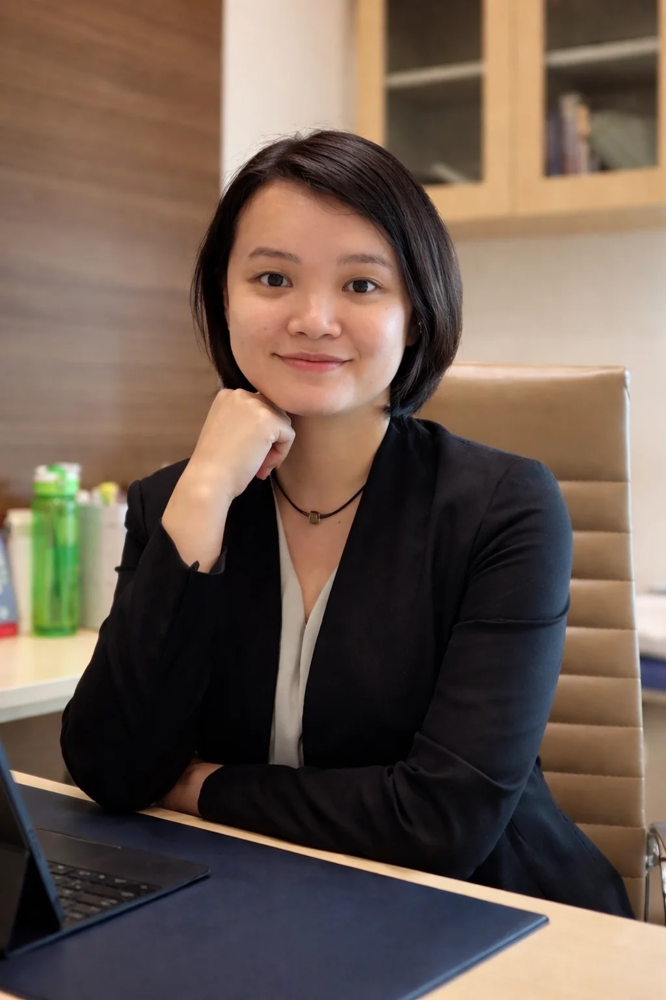

NSR-REGISTERED SPECIALIST PLASTIC SURGEON
Plastic Surgery Planned Around You
Natural, Considered and Never One-Size-Fits-All
Dr Agnes Yeo is a consultant plastic and reconstructive surgeon in Malaysia providing personalised breast surgery, body contouring and reconstructive care—with careful attention to safety, scars and proportion.
Start a Private WhatsApp EnquiryPrivate and confidential · Personalised guidance · No pressure to proceed
✓ Consultant Plastic & Reconstructive Surgeon ✓ NSR Registered ✓ Based in Klang, Selangor
Meet Dr Agnes Yeo
Thoughtful surgery begins with understanding your concern
Some patients want to restore volume after pregnancy. Others are concerned about breast asymmetry, loose abdominal skin, a prominent scar or a condition requiring reconstruction. The right plan depends on your anatomy, priorities, health and recovery needs—not simply on choosing a procedure from a list.
Natural restoration—not a different version of you.
What would you like help with?
Breast Shape or Asymmetry
Concerns about size, unevenness, volume loss, development or changes after pregnancy and weight loss.
Explore breast surgery →Abdominal or Body Changes
Loose skin, resistant fat or changes in body contour that may not improve through weight loss alone.
Explore body contouring →Scar or Reconstructive Concern
Keloids, difficult scars, wounds, skin lesions or defects requiring careful functional and aesthetic planning.
Explore reconstructive care →Featured Surgical Care
Breast Surgery
Breast concerns are not always about wanting to be bigger. Assessment may include asymmetry, underdevelopment, volume loss, sagging or reconstructive needs before discussing implants, fat grafting, lifting or reduction.
- Individual assessment of breast shape and proportion
- Options explained according to your goals and anatomy
- Realistic discussion of scars, recovery and limitations
Body Contouring
Liposuction, tummy tuck and body-lift procedures address different concerns. Consultation helps determine whether the main issue is fat, loose skin, muscle separation—or a combination.
- Assessment after pregnancy or significant weight change
- Procedure selection based on the underlying concern
- Planning that considers proportion and recovery
Not sure which procedure—or whether surgery—is appropriate?
You do not need to decide before contacting us. Begin by describing what concerns you, and the appropriate next step can be discussed.
Describe Your Concern PrivatelyOther Common Concerns
Arm or Leg Lymphedema
Persistent limb swelling, heaviness or skin changes? Understand assessment and personalised care options.
Explore lymphedema care →Lump Under the Skin
Not sure whether a lump is harmless or needs assessment and removal?
Learn more →Changing Mole or Skin Lesion
Concerned about a mole, dark spot, non-healing area or skin growth?
Learn more →Keloid or Difficult Scar
Is a raised, painful, itchy or widening scar affecting your comfort or confidence?
Learn more →
Your Surgeon
Dr Agnes Yeo Siek Ying
Consultant Plastic & Reconstructive Surgeon
Dr Agnes Yeo works across aesthetic and reconstructive plastic surgery. Her reconstructive background informs how she approaches cosmetic surgery: with attention to tissue, scars, healing, safety and long-term proportion.
Consultation is a two-way discussion. You will receive an honest assessment of what surgery may improve, what it cannot promise, the alternatives available and what recovery realistically involves.
What to Expect
1. Private Enquiry
Tell us your main concern through WhatsApp. Relevant information may be requested before arranging an appointment.
2. Personal Assessment
Your anatomy, health, expectations and suitable options are assessed—not just the procedure you initially had in mind.
3. Clear Plan
You receive an individual recommendation with expected scars, recovery, risks, limitations and estimated costs explained.
4. Supported Recovery
Follow-up is planned around healing, wound care, scar management and your return to normal activities.
Travelling from Outside Klang or Selangor?
Patients from other parts of Malaysia may begin with a preliminary online discussion. Depending on the procedure, an in-person examination remains necessary before final recommendations and surgery. Our team can explain the expected number of visits, likely recovery stay and follow-up arrangements.
Ask About Interstate ConsultationUnderstanding Treatment Costs
Surgical cost depends on the procedure, complexity, facility, anaesthesia, implants or specialised equipment, and the care required after surgery. Following assessment, you will receive a plan and cost estimate relevant to your needs before deciding whether to proceed.
Common Questions
Do I need to know which procedure I want before consultation?
No. It is enough to explain what concerns you. Assessment determines whether surgery, a non-surgical option or no treatment is most appropriate.
Will the result look natural?
The plan is tailored to your anatomy and preferred degree of change. Results vary between individuals, and realistic possibilities and limitations will be discussed during consultation.
Will surgery leave a scar?
Every surgical incision produces a scar. Incisions are planned carefully, and scar care is incorporated into follow-up, but final scar quality also depends on healing and individual biology.
Can I enquire privately before booking?
Yes. You may begin with a confidential WhatsApp enquiry. A clinical diagnosis or final surgical plan, however, requires an appropriate medical consultation and examination.
Follow Dr Agnes Yeo
Practical explanations about breast surgery, body contouring, scars, reconstruction, recovery and patient decision-making.
Begin with a private conversation
Tell us what concerns you and where you are located. We will guide you on the appropriate next step.
Start a Private WhatsApp EnquiryPrivate and confidential · Personalised guidance · No pressure to proceed